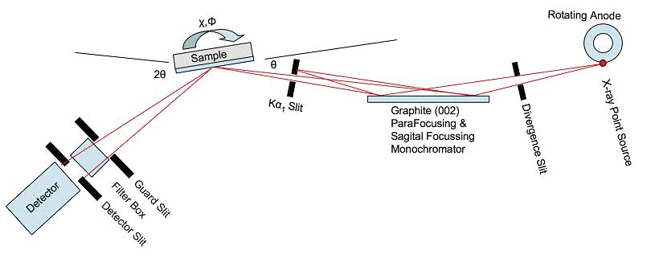

|

Schematic of the 18 kW setup.
Specifications:
-
18KW
Ultrex Rigaku Rotating Anode (donated by Abbott Labs in
2006)
-
Cu
Anode: Cu Ka1l=
1.5406 Å Cu Ka2l=1.54443 Å
-
Point Source: Normal Focus
0.5mm x 10
mm, 18 KW max power
-
The effective source size
should be
0.5-mm high by 1-mm-wide due to
6otake-off angle
. But we measure the width to be 0.5 mm wide. (See
Fig. )
-
Nominal operating power: 50
KV, 240
mA
- Huber slits for
controlling horizontal and vertical divergence (See
Fig.)
-
Nominal setting: hsdgap= 0.7
mm wide by
14-mm-high
-
Graphite (002) Grade ZYA ( <
0.5omosaic) from Advanced
Ceramics Corp.
-
Size: 25 x 25 x 2 mm
-
Para- focusing in the
horizontal
direction
-
Sagital-focusing in the
vertical direction
with Rs = 225 mm
-
2d002 = 6.708
Å, Cu
Ka1 qB =
13.28o
-
1
to 1 focusing, F1=F2=F=
RS /sinq=
980 mm. This is the distance from the source to the mono
and from the mono to the sample.
-
Incident beam intensity monitor (NaI
detector collecting scattered x-rays from Co coated Kapton
foil) I0 = 8900 cps at hsdgap=0.7mm and
vsdgap=14 mm.
-
Huber incident beam slits for passing
Cu Ka1and blocking Cu
Ka2
-
Nominal setting
ka2cen=0, ka2gap=0.5
mm-wide by 1-mm high
-
Huber 4-circle
diffractometer
-
Motorized Z-sample, zsamp=0
should put pin
in COR (Center of Rotation)
-
Huber 1006
X-Y-c-fgoniometer
-
Sample holder
-
2-theta arm: (Nominal
settings)
-
guard slit (
gshhcen=.64,
gshgap=1.1, gsvcen=1.4, gsvgap=8
)
-
XIA filter box, ( T =
0.24 x 0.01 for
STB straight thru beam)
-
detector slit, (
dshhcen=.05,
dshgap=1.0, dsvcen=1.9, dsvgap=12
)
-
Cyberstar NaI X-ray
detector
(0.3msec, 740V, Gain=8, LL=2.5, UL=6.5)
-
Auxillary equipment:
-
Laser Level on Tripod
-
X-ray Eye
-
Goniometer pin
-
High-power zoom lens
camera
The manuel of this machine can be downloaded
here
|